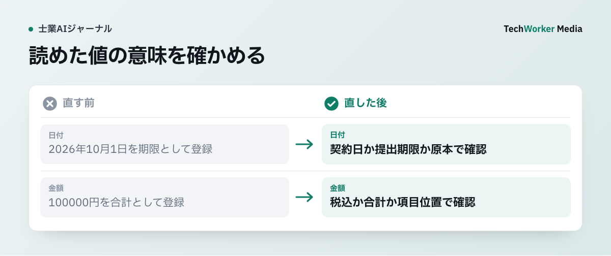

AI-OCRの抽出結果は、そのまま案件台帳に登録してよいですか？
登録しません。AI-OCRに任せるのは候補抽出までです。原本と照合した確認済みの値だけを台帳へ移します。
申請書、請求書、本人確認書類、手書きの相談票をAI-OCRへ通すと、転記の初動は速くなります。
ただし、抽出結果をそのまま案件台帳へ登録すると、読み違いが専門判断の前提へ入ります。日付の一桁、金額の桁、氏名の異体字、チェック欄が例です。
士業事務所でAI-OCRへ任せるのは、候補抽出までです。正本の確定は任せません。
確認工程は、「画像品質」「文字抽出」「項目対応」「案件上の採否」の4つに分けます。信頼度の数値は、人が見る箇所を絞る材料になります。正しさの証明にはなりません。
原本の画像と抽出箇所を並べ、重要項目は値と位置を確認してから、案件台帳へ移します。
AI-OCRの結果は、どんな手順で案件台帳へ移しますか？
原本を固定し、画像品質を確かめ、信頼度と原本位置で絞って照合し、確認済みの値だけを台帳へ入れます。

「2026年10月1日」を正しく読めても、それが提出期限とは限りません。日付の横の見出し、ページ、周辺文を確かめます。期限や金額の照合と、住所の空白を整える処理は別の工程にします。確認画面には原本位置を残し、迷う行を未確認のまま登録しない設計にします。
- 受付時に原本と用途を固定します。紙原本、顧客が送ったPDF、撮影画像のうち、OCR結果を照合する業務上の参照元を定めます。ファイル名に加え、受領日時、ページ数、表裏、差替版、案件IDを記録します。
- 低品質の画像は再取得へ戻します。文字抽出の前に除外します。モデル設定だけで補おうとしません。
- 項目ごとに原本位置と信頼度を持たせます。氏名、住所、日付、金額、識別番号、選択欄が対象です。確認画面では、抽出文字の横に原本の該当範囲を表示します。
- 業務ルールはOCRの後に適用します。項目名、周辺文、頁、文書種別を見て、日付や金額の意味を決めます。
- 重要な項目は二人目の確認へ回します。確認済みの値だけを案件台帳へ入れます。
手順1の補足です。OCR後のテキストは、参照元に置き換えません。法令・提出先・契約上の原本性は、任意に決めず、書類種別ごとに別途確認します。
後から値が争われたときに、どの画像のどの位置を読んだかへ戻れなければなりません。
手順2の補足です。Google Document AIは、一般に200dpi以上を案内しています。300dpi以上で良い結果が得られやすいとしています。解像度、文字サイズ、手書き品質などで精度が変わるため、試験を勧めています[1]。
同サービスは、ぼけ、暗さ、文字の小ささ、欠け、反射などを、ページ単位の品質情報として返せます[2]。低品質の画像は、再撮影・再読取りへ戻します。
手順3の補足です。抽出結果には、確信度スコア（抽出結果へのモデルの自己評価）を持たせます。Microsoft Document Intelligenceは、0から1の確信度を返します。対象は、単語、項目と値、選択欄などです。重要な用途では、人の確認へ回す設計を案内しています[3]。
人には似て見える文書でも、モデルには学習時の文書と異なる形式に見える場合があります。この点にも注意します。
一律に「0.9以上なら正しい」と決めません。Microsoftの透明性資料は、実際の用途を代表する試行で、信頼度と抽出品質の範囲を確かめるよう求めています。その結果から、自動処理と人手確認の閾値を決めます[4]。
氏名の一文字、期限、金額、法人番号のように、誤りの影響が大きい項目は、信頼度が高くても原本照合を必須にします。
Microsoftは、抽出値と原文位置を対応付ける考え方を示しています。確信度が低い結果は、人の確認へ送ります[5]。
同資料は、学習用の正解ラベルを足しても、文字認識そのものの誤りが直るとは限らないと明記しています。例は、文字のlを数字の1と読む誤りです。項目抽出と文字認識は、別に点検します。
手順4の補足です。OCRが「2026年10月1日」「100,000円」と読めても、意味は確定しません。日付が提出期限か契約日か、金額が税込みか合計かは、別に決めます。
案件台帳には、抽出値、原本位置、確認者、確認日、状態を残します。状態は、「未確認」「原本一致」「訂正」「判断保留」に分けます。
AI-OCRの運用で、うまくいかない例にはどんなものがありますか？
信頼度の数値だけで通す、保存要件を満たしたと考える、鮮明な画像だけで試験する、といった例があります。
- 信頼度の基準値を一律に決める。「0.9以上なら正しい」とは言えません。実際の用途に近い試行で確かめます。
- OCRで検索できるようにして保存要件を満たしたと考える。国税庁の電子帳簿保存法一問一答は、国税関係書類のスキャナ保存の要件を示しています。真実性、可視性、帳簿との相互関連性などです[6]。この制度は、すべての士業書類へ一律に適用されるわけではありません。ただ、「文字を読めた」と「法令・契約上の保存を満たした」を分ける必要性は共通します。
- 海外製品の説明で確認責任が済むと考える。海外製品の信頼度や人手確認の説明は、日本の士業の確認責任の代わりになりません。Amazon Textractのサービス資料は、人手確認の組み込みを案内しています。対象は、高リスクまたは慎重な取扱いを要する用途です[7]。日本での提出要件、原本還付、保存期間、本人確認、各士業の職業規程は、案件と提出先ごとに有資格者が確認します。
- 鮮明なスキャン画像だけで試験する。導入前には、実際に届く文書から検証集合を作ります。斜め撮影、薄い印字、手書き、訂正、表裏、欄外追記を含めます。
- 平均文字正解率だけで合否を決める。合格判定では、期限・金額・氏名・選択欄の誤登録件数も測ります。参照元へ戻れない抽出件数も測ります。
AI-OCRの完了条件は、全項目を自動登録できることではありません。誤りや迷いを、参照元の位置とともに人へ返すことです。確認済みの値だけが、案件台帳へ入ります。
項目の種類によって、確認の深さはどう変わりますか？
影響が大きい項目は原本照合や二人目の確認へ回し、意味を変えない整形は規則で処理します。
二重確認は、全項目へ均等に置きません。
| 項目の種類 | 例 | 確認の方法 |
|---|---|---|
| 誤りの影響が大きい項目 | 氏名の一文字、期限、金額、法人番号 | 信頼度が高くても原本照合を必須にする |
| 二人目の確認が要る項目 | 提出期限、顧客識別、振込額、権利義務に関わる選択欄 | 一人目の照合後に、二人目の確認へ回す |
| 意味を変えない整形 | 住所の空白、全角半角 | 規則で処理する |
| 例外 | 手書き、訂正印、欄外追記、複数ページにまたがる表、画像の欠け、同じ名称の複数項目 | 例外台帳に集め、次の受入試験へ戻す |
よくある質問
登録してはいけません。日付の一桁や金額の桁、氏名の異体字、チェック欄の読み違いが、専門判断の前提に入るためです。原本の画像と抽出箇所を並べ、重要項目は値と位置を確認してから案件台帳へ移します。
省けません。信頼度は人が見る箇所を絞る材料であり、正しさの証明ではないためです。一律に基準値を決めず、実際の用途に近い試行で確かめます。氏名の一文字、期限、金額、法人番号などは、原本照合を必須にします。
満たすとは限りません。文字を読めたことと、法令・提出先・契約上の保存要件を満たしたことは別です。提出要件、原本還付、保存期間、本人確認、各士業の職業規程は、案件と提出先ごとに有資格者が確認します。
次の一歩は何から始めればよいですか？
書類種別ごとに照合する原本を決め、重要項目の一覧と確認者を決めることから始めます。
- 書類種別ごとに、照合する原本と記録項目を決めます。
- 期限・金額・氏名など、原本照合を必須にする項目を決めます。
- 実際に届く文書で検証集合を作り、誤登録件数を測ります。
TechWorkerは、原本受付、再撮影条件、重要項目の照合、例外台帳、確認記録を案件フローへ落とす設計を支援します。
根拠資料
資料確認日：2026年9月29日。本文中の手順例は編集部の提案で、導入効果の実測値ではありません。
- Google Cloud, Document AI Supported Files
- Google Cloud, Enterprise Document OCR
- Microsoft Learn, Accuracy and confidence scores
- Microsoft Learn, Transparency note for Document Intelligence
- Microsoft Learn, Confidence, grounding, and labeled samples
- 国税庁, 電子帳簿保存法一問一答（スキャナ保存関係）
- AWS, AI Service Card: Amazon Textract AnalyzeID